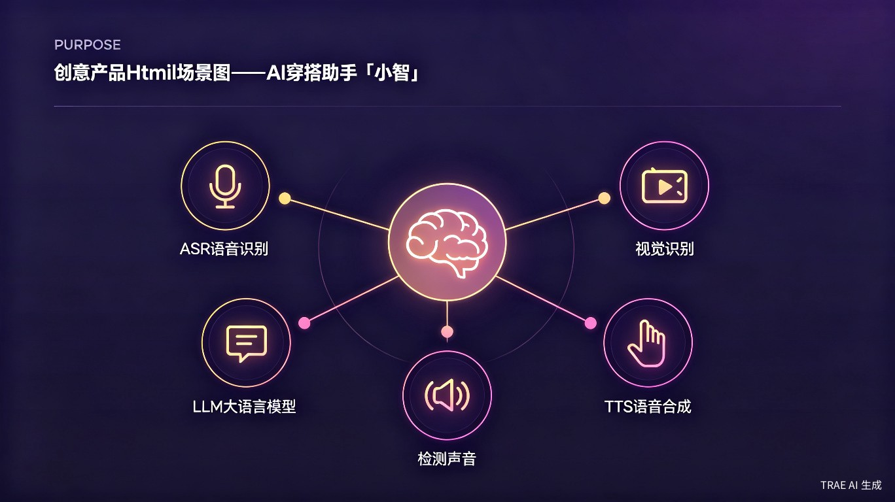
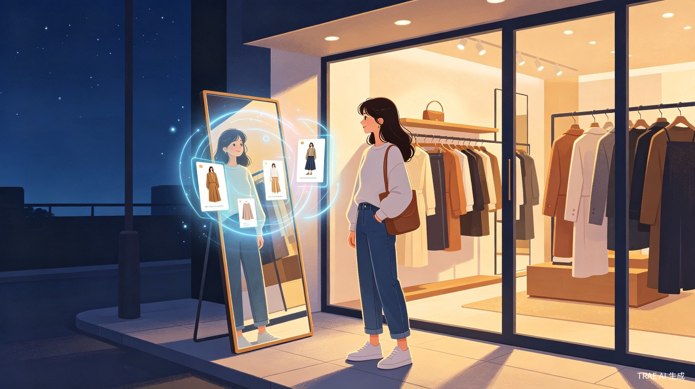
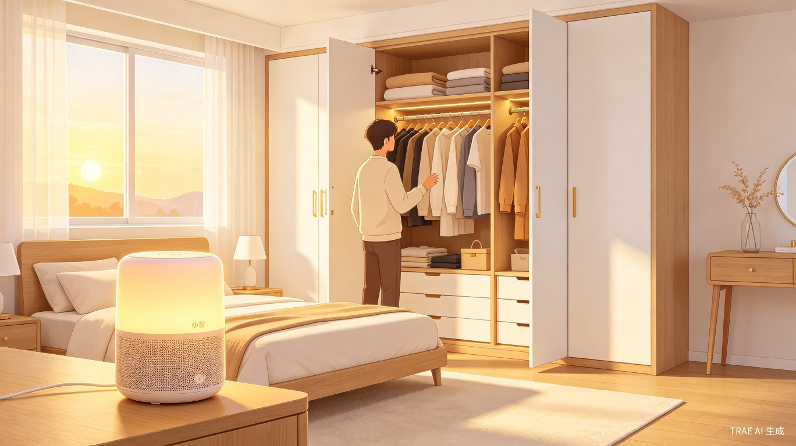
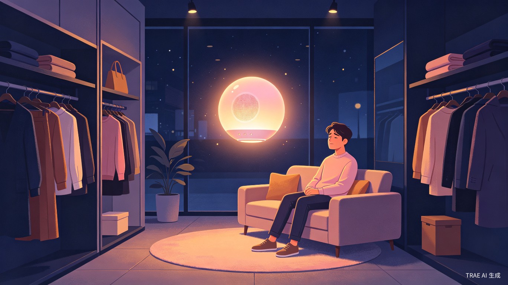

小智
24h 无人服装店里，那个永远不睡的 AI 穿搭搭子
吃饱了想显瘦，
逛累了想清静。
带娃久了想放空，
下班之后想任性。
小智，知你所有的小心情。
一、创意介绍
创意名称
小智 —— 24h 无人服装店里，那个永远不睡的 AI 穿搭搭子
想解决什么问题
现在市面上的服装店几乎全是"有人门店"——找货、答规则、推搭配、陪试衣这些高频服务，过去默认只能由真人导购接住。我自己的「知里」从第一天起就做 24h 无人服装店，但"省掉真人"也连带卖掉了所有店内服务能力，顾客面对的是一片"省掉真人后留下的真空"。
为什么会想到做这个
经营 24h 无人店之后我才看清：顾客买的不是"没人服务"，顾客买的是"该有人的时候有人在"。深夜、凌晨、社恐型顾客的真实需求，现存的所有线下零售形态都给不出这个答案。
大概是什么产品
一套部署在店内小主机上的软硬一体 AI 语音陪伴系统（app.py 串起 ASR / LLM / 视觉 / TTS / 手势检测五大模块），店里没有、也不需要任何真人店员。顾客开口"小智小智"即可唤醒，60 秒连续对话。
摄像头是我的眼、麦克风是我的耳朵、音响是我的嘴、AI 是我的大脑
同一套程序稍作改造也能装进家庭衣橱：出门前 5 分钟一句"今天穿什么"，AI 拍照看衣橱 + 推荐 2 套 + 念出具体拿哪件。店里是主战场，家庭是顺手的延展。

二、目标用户及痛点
面向哪些用户
核心用户
18–50 岁、社恐 / 习惯独处、注重穿搭但搭配知识不足的都市顾客
强需求用户
晚 10 点到早 8 点独自逛街者（刚下班、失眠、消费解压、临时补一件）
隐性用户
想拓 24h 无人店又怕"无人 = 无服务"的中小服装店主
在什么场景下使用
进店瞬间
摄像头识别到有人，AI 主动迎一句"你好，慢慢看"——不叫不响、叫了就在。
镜子前试衣
"小智小智，帮我搭一下" → 拍照识衣 + 推 2 套搭配 + 念出款式 / 尺码 / 货架位置。
魔镜夸夸 + 作诗
"小智小智，我这套穿搭怎么样" → AI 看一眼点评；AI 顺势念一首贴今天穿着的 4 句短诗。
跨 0 点仪式
0 点整 AI 轻轻念一句"新的一天开始了，路上人都睡了，这里还是你的"——每天只一次，空店也念。
深夜情绪低
"小智小智，聊聊天" → AI 拍照 + 短句陪伴，不催不扰。
店内规则咨询
"小智小智，如何自助付款 / 会员怎么办 / 怎么联系店主" → 店主维护的知识库实时答，不占用真人时间。
设备控制
"小智小智，有点热 / 调到 26 度" → 美的空调一句话响应，真实状态由空调回包，重启不丢。
TTS 换声
"小智小智，换个温柔点的声音" → 音色立刻切到温柔姐姐，含店主自录的"店主原声"。

当前痛点
品类空白
传统店有营业时间、纯无人店给不了服装的"重搭配"专业服务、电商给不到现场体验，"24h 无人 AI 服装店"目前基本不存在
深夜独购者被忽略
传统店 22 点关门、夜场店有导购压力、纯无人店解决不了服装复杂度——这群人现在没有去处
社恐顾客"既要又要"
要"没人盯"又要"有人答"，现存所有形态都只给一半，只有 AI 能落在中间那一档"不叫不响、叫了就在"
三、价值与意义
商业价值
「小智」是让「24h 无人 AI 服装店」从一个点子长成可跑通样本的关键拼图——单店硬件投入仅一台小主机 + 消费级麦克风/摄像头/音响，AI 一个人工成本撑起 24h 全套服务半径。深夜独购长尾时段客流小但客单价高、决策冲动，是当前所有线下服装形态都覆盖不到的增量。
社会价值
让"无人"不等于"无服务"：城市里大量"晚 10 点后才想逛街"的人，过去只能在"忍着""硬闯有导购的店""改去便利店但买不到衣服"里三选一，「24h 无人 AI 店」给了他们第一个、也是最合适的一个选项；同时也让街边小店第一次拥有了"24h 在线搭配师"——把资深搭配师的服务能力摊薄给所有深夜进门的顾客。


推门进来，是为了出门时那一点不一样。
「小智」守在 24h 无人店里，
等你每一个"想任性"的深夜，
也接住你每一句"今天随便穿穿"的心情。
小智，知你所有的小心情。